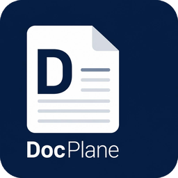

DocPlane.it
Un unico pacchetto con tre programmi gratuiti: videoscrittura, foglio di calcolo e presentazioni. Si avviano da un lanciatore, funzionano senza installazione e correggono i testi in italiano.
Scarica per Windows (zip)Gratuito e open source · tutte le versioni
WordBook.it
Videoscrittura
SheetCalc.it
Foglio di calcolo
Flickdeck.it
Presentazioni
Come si usa
- Scarica lo zip e decomprimilo dove vuoi (anche su una chiavetta): non serve installare nulla.
- Apri
DocPlane.it.exe: dalla finestra scegli il programma o un file recente. - Il pulsante «Imposta come programmi predefiniti» apre le impostazioni di Windows per associare i tipi di file.
- Il pulsante «Scarica i dizionari» installa il correttore ortografico e il dizionario dei sinonimi (italiano e inglese), condivisi dai tre programmi.
Una nota su Windows
I programmi non sono firmati digitalmente: alla prima apertura Windows può mostrare «Windows ha protetto il PC». Scegli Ulteriori informazioni, poi Esegui comunque.
Codice e licenze
Il codice è su GitHub: DocPlane.it, WordBook.it, SheetCalc.it, Flickdeck.it. I dizionari hanno licenze proprie, indicate nella cartella dictionaries.